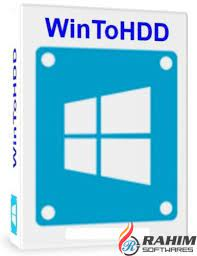

windows 8.1 instal free

 cum sa te uiti pe citi biti merge sistema
cum sa te uiti pe citi biti merge sistema


pasul 2 instalatorul
WinToHDD INSTAL
INSTRUCTIE
1)instalati WinTOHDD_free
2)deschidem instalatorul
3)alegeti Win8.1_Romanian_x32(simplu!!!)
4)pe telefon creativa un acaunt de xbox pe aplicatia xbox!!!
DISCLEIMER!!!
daca o sa apara probleme
acest sait nu este responsabil pentru daune